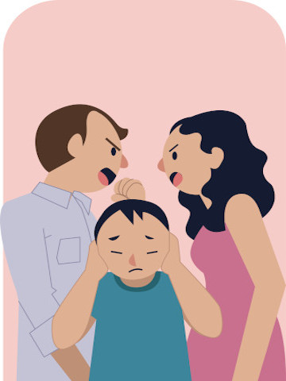

|  |
La violencia familiar puede adoptar muchas formas, pero involucra el uso de la intimidación y amenazas o conductas violentas para ejercer poder y control sobre otra persona. En general, la persona abusiva es de sexo masculino y las mujeres a menudo son las víctimas; sin embargo, la violencia familiar también se produce contra los hombres. El maltrato infantil, de personas mayores y de hermanos también se considera violencia familiar. |
La violencia familiar es un término utilizado para describir la violencia y el abuso de familiares o una pareja íntima, como un cónyuge, ex cónyuge, novio o novia, ex novio o ex novia, o alguien con quien se tiene una cita. Otros términos utilizados para la violencia familiar incluyen los siguientes:
Maltrato infantil.
Maltrato de pareja íntima.
Violencia doméstica.
•Violencia Emocional
•Violencia Sexual
|
Como tal, está catalogada como un problema de salud pública y, en
consecuencia, requiere políticas, programas y campañas emanadas de los organismos competentes para prevenir y concientizar a la
población sobre las consecuencias de la violencia intrafamiliar y fomentar la denuncia de este tipo de situaciones. |
 |